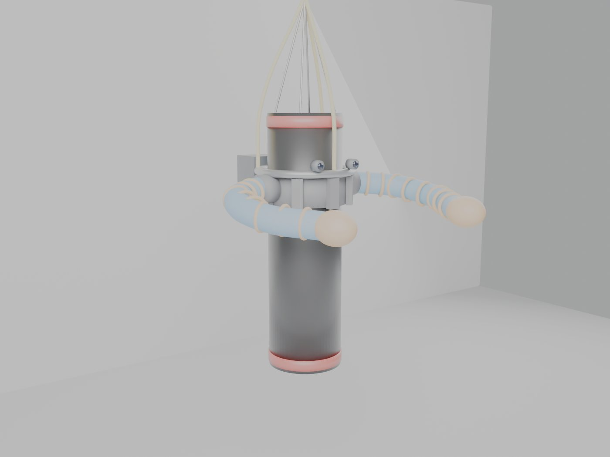
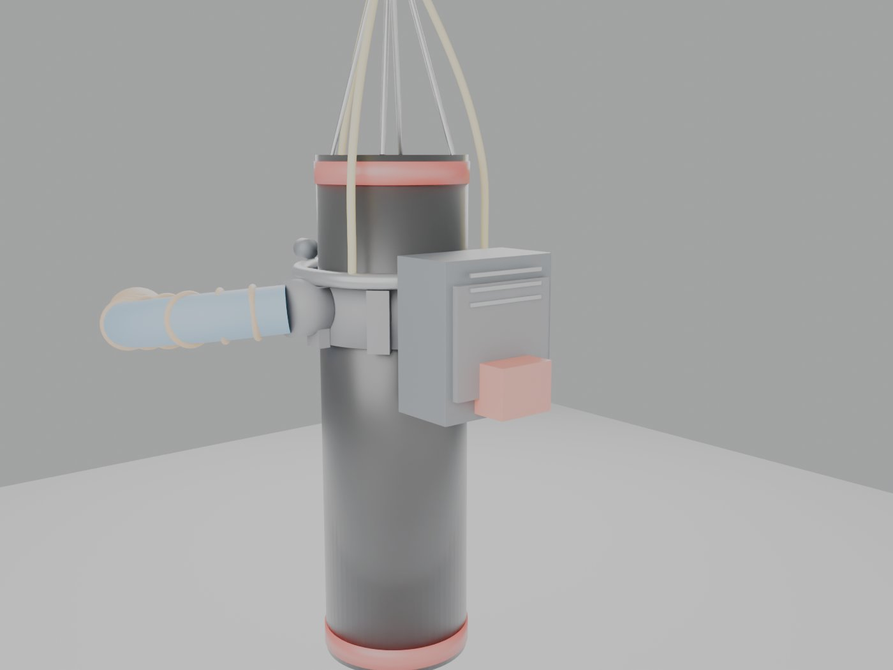
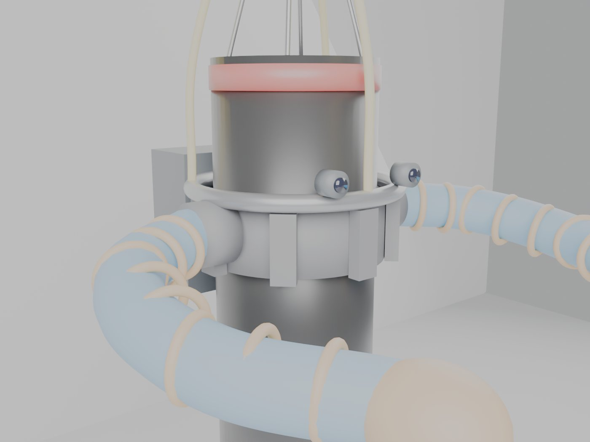
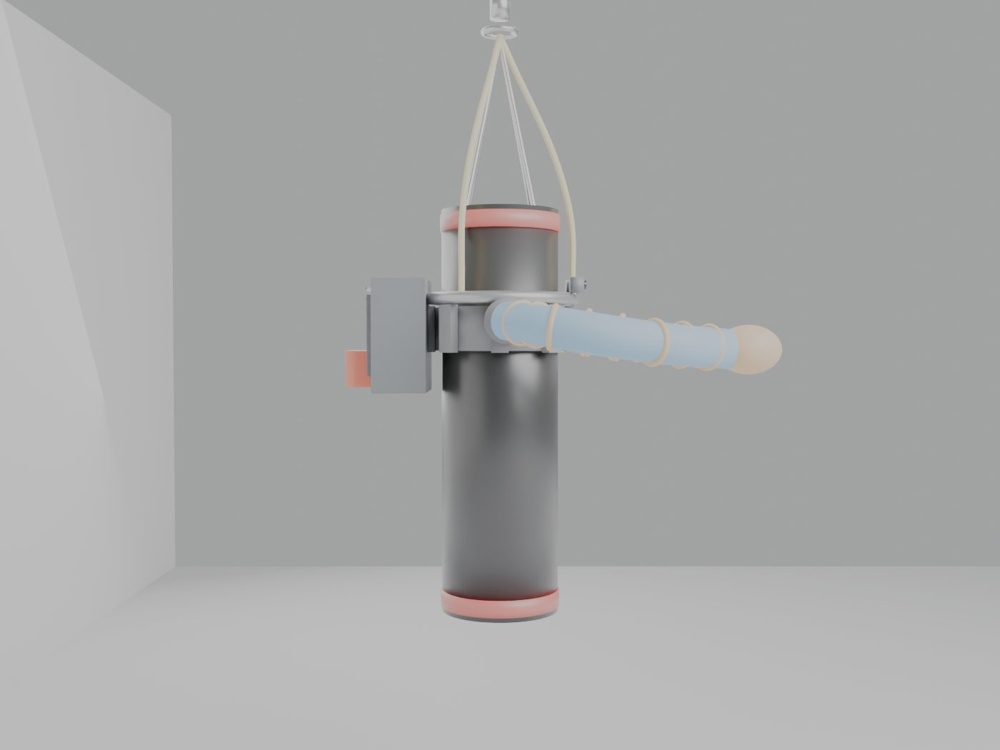

01 — Notice
No test results exist for Model B.The figures on this page are paper estimates with labeled assumptions, and published manufacturer specs for the bag survey. Soft-arm contact behaviour, collar grip and tracking on a swinging bag need physical validation. Hardware tests are parked until spend is approved.
02 — What Model B is
Everything mounts on the bag. Nothing is separate or away from it.
- Clamp collar at the top third of the bag, with a segmented ratchet band and a high-grip liner. It carries the rotating shoulder ring and the two soft arms.
- All-in-one pack between the arm roots, holding the compressor, small air tank, valves, board, motion sensor, cameras and the removable battery dock.
- Removable rechargeable battery (18/20 V power-tool class) with a desktop charger, plus a dual dock for hot-swap.
- 3 to 4 load straps clipped to the bag's own chain top ring or swivel. They carry the kit's weight, so the collar only has to stop it from turning.
- Same app and handheld as Model A.
Estimated kit mass is 25 lb (ASSUMPTION), with a hard ceiling of 30 lb.
03 — Compatibility rule
| Requirement | Value | Basis |
|---|---|---|
| Hanging | Chain-hung with top ring or swivel | Decision 27 Sep. Freestanding comes later |
| Diameter | 13 to 19 in, two collar sizes (13–15, 16–19) | Bag survey of published maker specs |
| Weight | 80 lb minimum, 100 lb+ recommended | Tilt estimate + survey. 80 lb floor is an ASSUMPTION |
| Length | 42 in minimum | ASSUMPTION pending layout |
| Shape | Cylindrical only. No water or shaped bags | Bag survey |
04 — Visual review
Concept v0 renders from the Blender build script (build_model_b.py). The geometry is representative, not final design. Physics films (tilt, swing, arm reaction) come in the next pass.




05 — Status table
| ID | Item | Severity | Status | Evidence / path to close |
|---|---|---|---|---|
| MB-01 | Collar turning or slipping under punch torque and arm reaction | High | OPEN | Paper margin about 11x (E1). Bench test T-01 |
| MB-02 | Tilt and balance | Medium | OPEN | About 1.1 to 1.9 deg on paper (E2). Trim with strap adjusters |
| MB-03 | Camera tracking on a swinging bag | High | OPEN | Swing 10 to 17 cm from arm push (E3). Controls spec CB-01 |
| MB-04 | Runtime per battery pack | Medium | OPEN | 1.0 to 2.4 h on paper (E5). Bench T-08 |
| MB-05 | Pack survives impacts, vibration isolation | High | OPEN | Design + T-07 |
| MB-06 | Strap and clip loads | Medium | OPEN | 25 lb peak per strap, 125 lb+ rated (E4). T-06 |
| MB-07 | Bag cover wear from collar | Low | OPEN | T-09 |
06 — Readiness checklist
| Deliverable (parity with Model A) | Status |
|---|---|
| Architecture & requirements | DRAFT v0 |
| Bag compatibility survey | DRAFT v0 |
| Paper estimates (grip, tilt, swing, straps, runtime) | DRAFT v0 |
| Soft arm interface | DRAFT, awaiting Soft desk review |
| Controls & perception spec | DRAFT, awaiting Controls desk review |
| Safety review | DRAFT v0 |
| BOM / DFM (no prices) | DRAFT v0 |
| Test plan | DRAFT, all tests parked |
| Concept renders | v0 |
| Physics films | NOT STARTED |
| Costing | Not started, goes through Stephen |
07 — Estimates (ASSUMPTION inputs)
- Collar grip against turning: about 560–750 N·m against 50 N·m of arm torque, so about 11x on paper. Wet or sweaty covers are the risk.
- Tilt from the off-center pack: 1.9° at 80 lb, 1.6° at 100 lb, 1.1° at 150 lb.
- Swing from one arm push: 10–17 cm. Tracking target is 30 cm movement and 10° tilt.
- Straps: 25 lb peak each. Rated hardware 125 lb+ each, plus secondary retention.
- Runtime: 1.0–2.4 h per 90 Wh pack.
08 — Deep links
- MODEL_B_SPEC_v0.md · Architecture and requirements
- MODEL_B_BAG_SURVEY_v0.md · Bag compatibility survey (published maker specs)
- MODEL_B_ESTIMATES_v0.md · Paper estimates: grip, tilt, swing, straps, runtime
- MODEL_B_SOFT_ICD_v0.md · Soft arm interface (for Soft desk review)
- MODEL_B_CONTROLS_v0.md · Controls and perception (for Controls desk review)
- MODEL_B_SAFETY_v0.md · Safety hazard review
- MODEL_B_BOM_DFM_v0.md · Preliminary BOM and DFM notes (no prices)
- MODEL_B_TEST_PLAN_v0.md · Test plan (parked, spend needs approval)
09 — Decisions log
- 27 Sep: GO on Model B as a second product. No pole, no floor module, no hanger plate. Pack between the shoulders. Removable rechargeable battery.
- 27 Sep: Name is “Model B”. Shares the Model A app.
- 27 Sep: Hanging bags only at launch. Freestanding comes later.